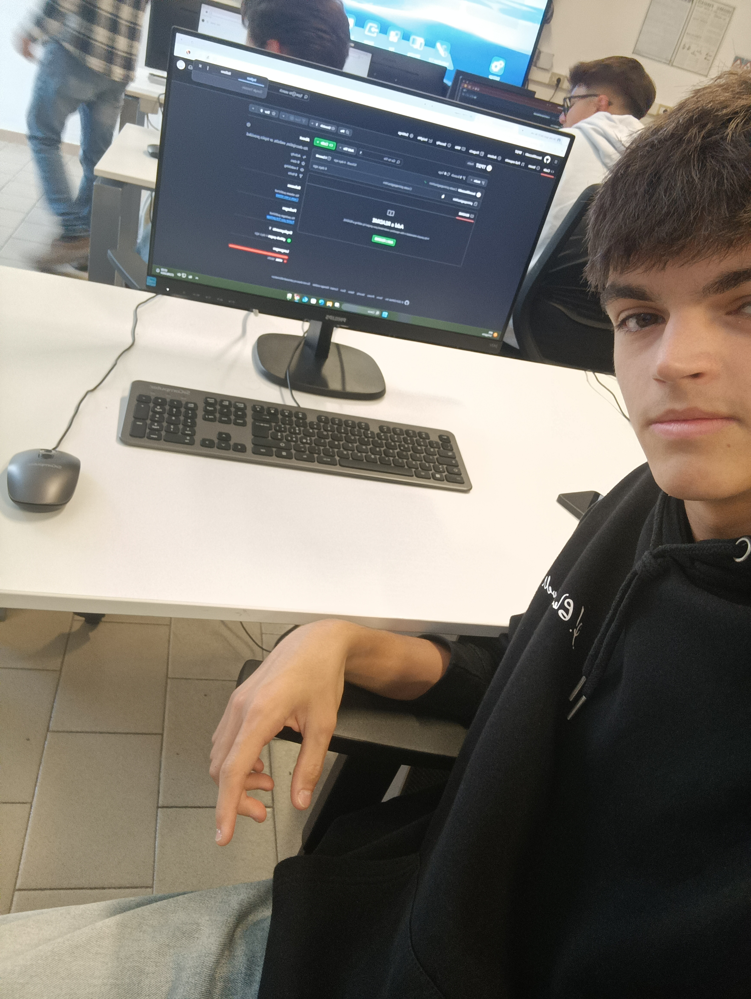

SCHEDA PERSONALE
- NOME E COGNOME: Mezzadri Jason
- ETA': 15 anni
- CLASSE E ISTITUTO: 3A INFO Istituto jc Maxwell
- DATA DI NASCITA: 14/11/2008
- LUOGO DI RESIDENZA: Piobesi Torinese
Sono cresciuto in un paese immerso nella natura, dove il verde e gli spazi aperti hanno influenzato profondamente il mio modo di vedere il mondo.
Una mia qualità è la curiosità: mi piace esplorare nuovi argomenti e imparare nuove cose costantemente, soprattuto dalle esperienze quotidiane.
Un aspetto importante della mia vita è l'empatia: credo che comprendere gli altri e saper ascoltare sia essenziale per creare nuove relazioni.
Tre dei miei interessi principali sono la musica, la tecnologia e il volontariato.
-La musica mi appassiona perché mi permette di viaggiare attraverso i miei sentimenti e attraverso il mio umorismo, variando molti generi di canzoni;
-La tecnologia, come l'informatica mi affascina perché ha il potere di migliorare la vita delle persone, attraverso mondi virtuali come i videogiochi e mi piace scoprire e imparare nuovi strumenti di programmazione;
-Il volontariato è importante per me perché mi dà l’opportunità di restituire qualcosa alla comunità, aiutando chi ne ha più bisogno anche attraverso i campi estivi dove faccio l'animatore gratuitamente per trasmettere ai bambini tutti i tempi belli della mia infanzia passati lì.
Tre capacità che ho svluppato lungo la craescita di me stesso sono:
-La capacità di ascoltare, in classe il professore ma anche le opinioni o dei punti divista diversi di un amico;
-La capacità di dare consigli, ad amici che stanno passando un periodo brutto ma nche semplicemente per un litigio;
-Tenermi in forma, anche avendo molti impegni durante la settimana e non facendo più sport.
Alcuni dei miei obiettivi a breve termine sono:
-Rendere orgogliosi i miei genitori ma soprattutto me stesso durante l'anno scolastico;
-Impegnarmi per prendere più crediti possibili al termine del primo anno del triennio.
Uno dei miei più grandi obiettivi da raggiungere a lungo termine è:
-Una volta preso il diploma, entrare a far parte del mondo del lavoro, trovandomene uno ben retribuito e che mi renda felice.
Una citazione che mi ispira è: "Sii il cambiamento che vuoi vedere nel mondo", attribuita a Gandhi. Questa frase mi rappresenta perché credo che ogni individuo abbia la responsabilità e il potere di fare la differenza, iniziando dalle proprie azioni quotidiane.
